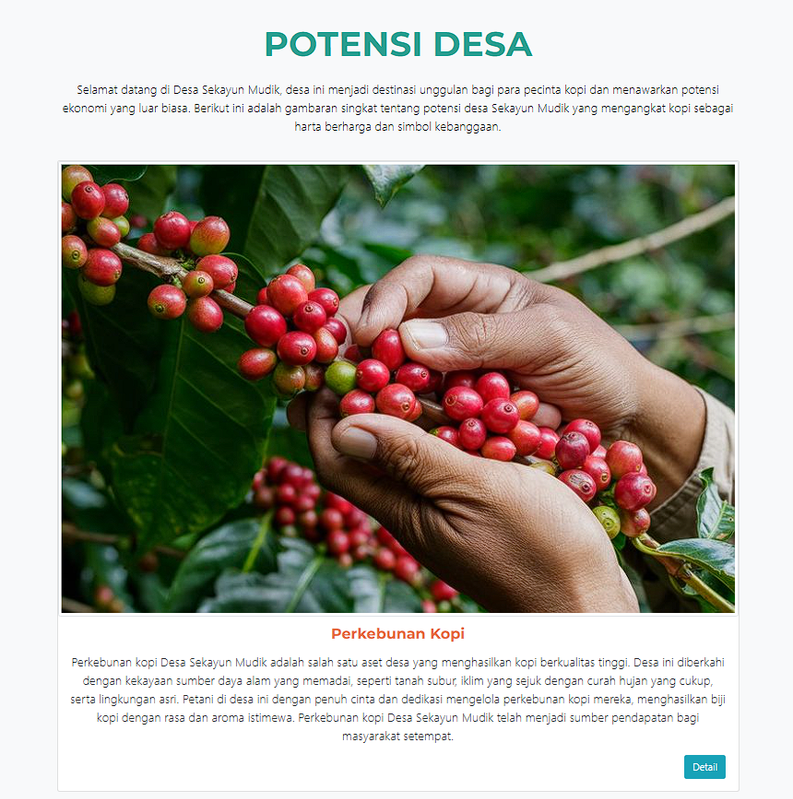
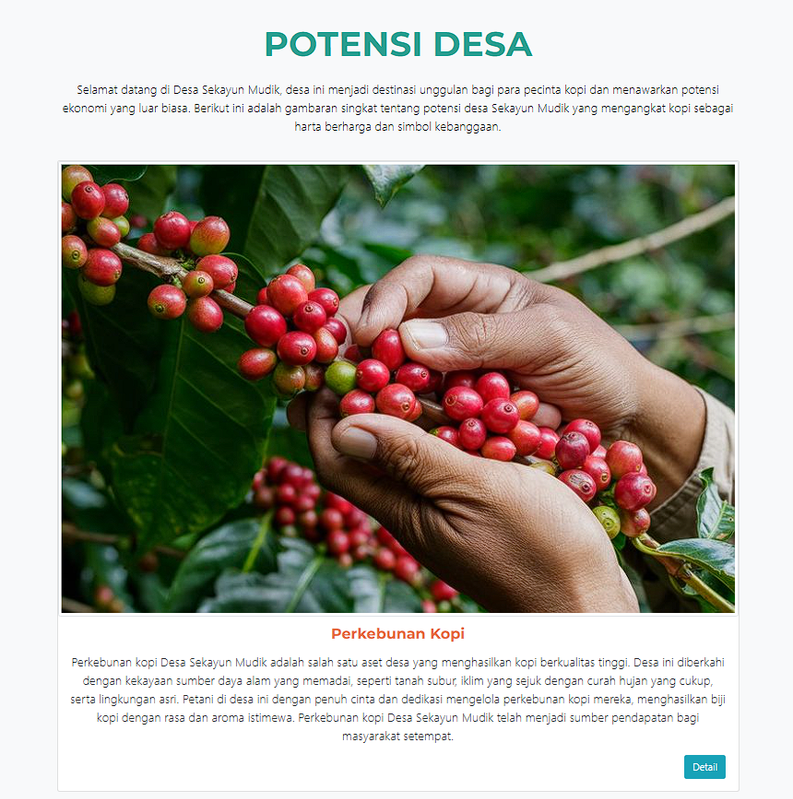

Website Projects
Website KSLI UNIB
Website KSLI (Unit Pelaksana Teknis Kerjasama dan Layanan Internasional) merupakan website yang mengelola semua kerja sama dalam negeri maupun luar negeri yang telah dilakukan oleh Universitas Bengkulu.
Website Wonderfull Bengkulu
Saya mengembangkan sebuah website bernama Wonderful Bengkulu yang bertujuan untuk mempromosikan berbagai potensi dan keindahan pariwisata yang terdapat di Bengkulu kepada wisatawan, baik domestik maupun mancanegara. Website ini dirancang sebagai media informasi sekaligus platform layanan, di mana pengunjung dapat memperoleh informasi lengkap mengenai destinasi wisata serta melakukan pemesanan berbagai paket wisata yang telah disediakan secara praktis dan efisien.
Website Profil Desa Sekayun Mudik
Website ini merupakan profil resmi Desa Sekayun Mudik yang terletak di Kabupaten Bengkulu Tengah. Website ini dikembangkan sebagai media informasi digital untuk memperkenalkan berbagai aspek yang dimiliki oleh Desa Sekayun Mudik kepada masyarakat luas..
Tier Buch | Hand Tracking AR
Saya mengembangkan sebuah aplikasi Augmented Reality (AR) menggunakan Unity dengan mengintegrasikan teknologi hand tracking canggih yang didukung oleh MediaPipe dan AR Foundation. Aplikasi ini menghadirkan pengalaman AR berbasis gestur yang imersif dan intuitif, sehingga pengguna dapat berinteraksi dengan objek virtual secara alami tanpa perlu menyentuh layar.
Aplikasi & Game Projects
Pusaka Pahlawan
Saya mengembangkan game "Pusaka Pahlawan", sebuah game petualangan 2D platformer yang membawa pemain dalam peran seorang pahlawan. Dengan alur cerita yang mendalam dan mekanisme permainan yang menarik, game ini bertujuan untuk menyadarkan masyarakat akan pentingnya melestarikan budaya serta senjata tradisional Indonesia. Selain menghadirkan pengalaman bermain yang seru, "Pusaka Pahlawan" juga berfungsi sebagai media edukasi yang mengajarkan nilai sejarah dan identitas bangsa agar tidak hilang ditelan waktu.

Nautika AR
Saya mengembangkan media pembelajaran interaktif untuk jurusan Nautika Kapal Penangkap Ikan (NKPI) dan Teknika Kapal Penangkap Ikan (TKPI) di tingkat SMK dengan memanfaatkan teknologi game dan simulasi berbasis Augmented Reality (AR).
Desain & 3D Projects

Classroom | 3D
Proyek ini merupakan desain 3D classroom bergaya anime yang saya buat menggunakan Blender. Konsep visual yang diangkat menampilkan suasana ruang kelas yang bersih, modern, dan nyaman dengan pencahayaan natural dari jendela besar yang memberikan kesan hangat seperti suasana pagi hari..
Living Room | 3D
Proyek ini merupakan desain 3D ruang tamu bergaya anime dengan konsep minimalis dan nuansa hangat yang didominasi material kayu. Desain ini menampilkan suasana interior yang nyaman dan modern dengan pencahayaan lembut yang menciptakan atmosfer tenang.
Desain Pamflet
Berikut beberapa desain yang telah saya kerjakan mencakupi pamflet dan brosur.

2D Illustrasi Anime Style
pada desain 2 dimensi ini saya membuat nya dengan menggunakan software clip studio paint dengan cara menggambar digital secara manual dengan menggunakan alat bantu pen tablet.

Buku Cerita Anak | Desain
Proyek ini merupakan desain dan ilustrasi buku cerita anak berjudul “Ayo Berkata Jujur!” yang mengangkat nilai moral tentang kejujuran dalam kehidupan sehari-hari. Buku ini dirancang menggunakan palet warna yang kalem dan hangat untuk menciptakan suasana yang nyaman, ramah anak, dan mudah diterima oleh pembaca usia dini.
 
